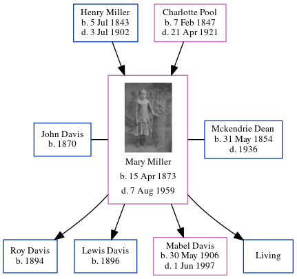

John Monroe Davis 1870 -
[ Home ] | [ Calendar ] | [ Surnames Index ] | [ Errors ] | [ Family History ]John Davis, the husband of Mary Ann Miller (the third cousin three-times-removed on the mother's side of Nigel Horne), was born in Indiana, USA in 18701 and married Mary (with whom he had 3 children: Roy J, Lewis H and Mabel Charlotte) in Clay, Indiana, USA on 2 Aug 18912. On 1 Jun 1900, he was living in Clay1.
Children
- Roy J was born in 1894
- Lewis H was born in 1896
- Mabel Charlotte was born on 30 May 1906
Citations
- US Census 1900 - Findmypast (was the head of the household)
- United States Marriages - Findmypast
Media
United States Marriages - R_1128532183
United States Marriages - FS/MAR/36610120/1
United States Marriages - R_1128532183/1
Family Tree
Map
Generated by ged2site. Last updated on Jul 3, 2024
Known Issues
Changing 'United States' to 'USA' in Clay, Indiana, United States